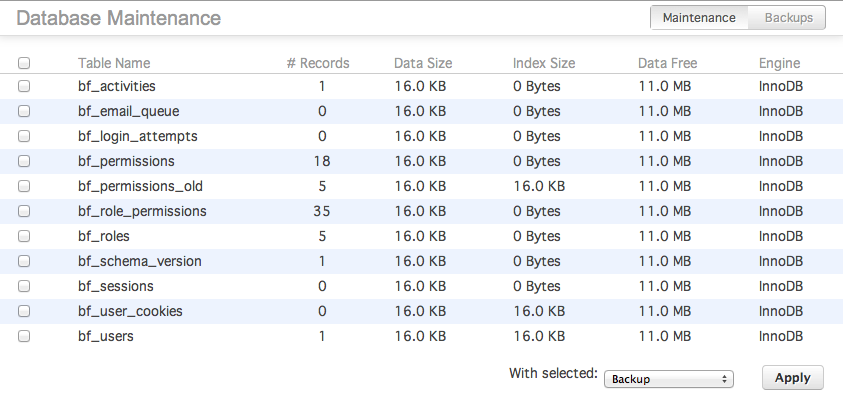
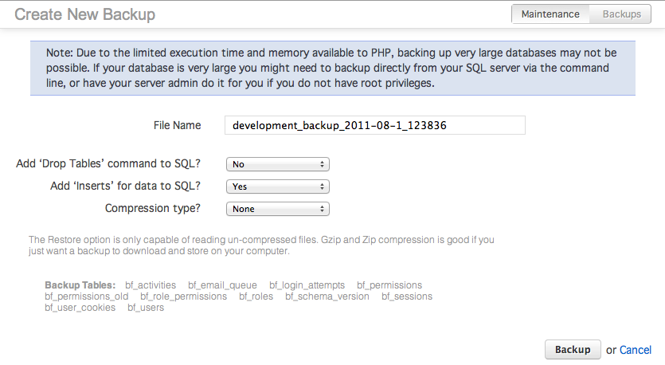
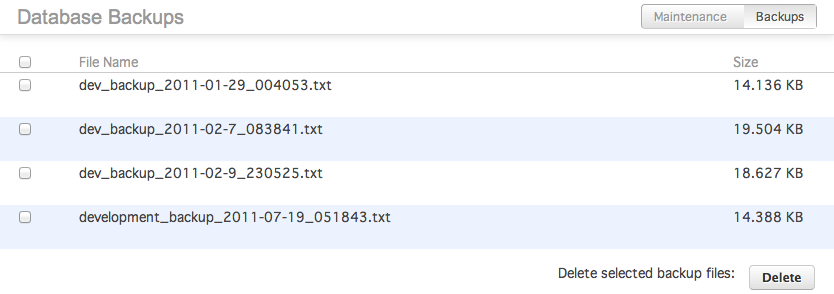

The Database module provides a UI for performing various maintenance on your database, including backups, repair and optimization. Due to limitations in CodeIgniter, most of the features are only available for MySQL/MySQLi databases.
| Database | The Database module provides a UI for performing various maintenance on your database, including backups, repair and optimization. |
| Performing Backups | To create backups of all or part of your database, navigate to the Developer / Database / Maintenance page. |
| Download and Restore Backups | When you navigate to Developer / Database Tools / Backups, you will be shown all backup files that currently exist in this installation of Bonfire. |
| Repairing Tables | Repairing database tables will attempt to recover your data in the chance that your tables become corrupted. |
| Optimizing Your Database |
To create backups of all or part of your database, navigate to the Developer / Database / Maintenance page. You will be presented with a screen that lists all of the tables currently in your database, with some simple stats about each, including number of records, engine used, and space taken up.
Select the tables that you want to backup. Make sure the dropdown at the bottom of the table is on ‘backup’, then click Apply. This will take you to the second step in the backup process.
From here, select the options you want for the backup file
The backup routine uses CodeIgniter’s database backup command, so will suffer from any and all limitations. The primary limitation is that this function is only available for MySQL databases.
When you navigate to Developer / Database Tools / Backups, you will be shown all backup files that currently exist in this installation of Bonfire.
From this screen you can download, delete and restore existing backup files. To download or restore, hover the cursor over the row with the file. Two new links for download and restore appear. Choose the action that you would like.
Downloading will present you with a dialog box to choose where you want to download it.
Restore will take you to a new screen that asks you to confirm the process.
Repairing database tables will attempt to recover your data in the chance that your tables become corrupted. However, this will only work on MyISAM, Archive and (since MySQL 5.1.9) CSV table types.
To repair damaged tables using Bonfire, navigate to Developer / Database Tools / Maintenance. Select the tables that you want to repair and change the dropdown at the bottom of the list of tables to ‘Repair’. Click Apply and Bonfire will attempt to repair the tables.
OPTIMIZE TABLE should be used if you have deleted a large part of a table or if you have made many changes to a table with variable-length rows (tables that have VARCHAR, VARBINARY, BLOB, or TEXT columns). Deleted rows are maintained in a linked list and subsequent INSERT operations reuse old row positions. You can use OPTIMIZE TABLE to reclaim the unused space and to defragment the data file. After extensive changes to a table, this statement may also improve performance of statements that use the table, sometimes significantly.
To optimize your database, navigate to Developer / Database Tools / Maintenance. Change the dropdown menu to Optimize and click Apply. Bonfire will attempt to optimize your tables.